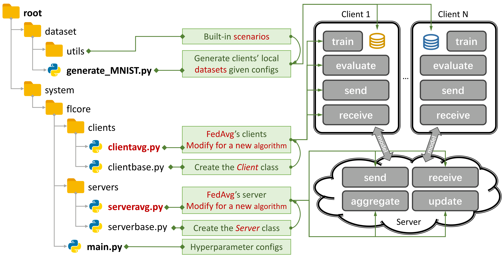

Introduction
The origin of the data heterogeneity phenomenon is the characteristics of users, who generate non-IID (not Independent and Identically Distributed) and unbalanced data. With data heterogeneity existing in the FL scenario, a myriad of approaches have been proposed to crack this hard nut. In contrast, the personalized FL (pFL) may take advantage of the statistically heterogeneous data to learn the personalized model for each user.
Simple File Structure
An Example for FedAvg. You can create a scenario using generate_DATA.py and run an algorithm using main.py, clientNAME.py, and serverNAME.py. For a new algorithm, you only need to add new features in clientNAME.py and serverNAME.py.
Key Features
args.num_new_clients in ./system/main.py. Please note that not all tFL/pFL algorithms support this feature.Acknowledgement
If you find our PFLlib useful, please cite its corresponding paper
@article{zhang2025pfllib,
title={PFLlib: A Beginner-Friendly and Comprehensive Personalized Federated Learning Library and Benchmark},
author={Zhang, Jianqing and Liu, Yang and Hua, Yang and Wang, Hao and Song, Tao and Xue, Zhengui and Ma, Ruhui and Cao, Jian},
journal={Journal of Machine Learning Research},
volume={26},
number={50},
pages={1--10},
year={2025}
}